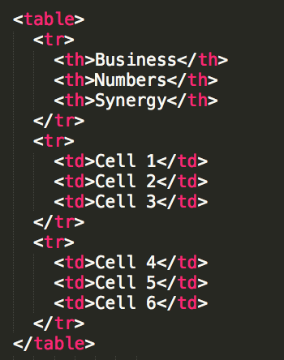
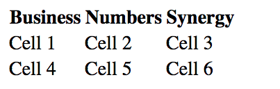

##Intro to Web Development Part One: HTML & CSS
###Week 1 Session 1
##Logistics
####Start - End
November 2 - 21
####Days Held
Tuesdays and Thursdays 6-8pm
##Goals for tonight
- Introductions
- Course Expectations
- The website as communication
- Your development toolchain
- Introduction to HTML
Introduction
Beau Carnes
beaucarnes@gmail.com | @carnesbeau
###Beau Carnes
**_Work_**
- Software Developer @ CerteDrive in Grand Rapids
- Former high school teacher
**_Education_**
- Software Development (Western Governors University)
- Special Education (Western Governors University)
- Video Production (Ferris State University)
Family!
###More about me
**_Video Courses_**
- [freeCodeCamp](https://medium.freecodecamp.org/my-giant-javascript-basics-course-is-now-live-on-youtube-and-its-100-free-9020a21bbc27)
- [Manning Publications](https://www.manning.com/livevideo/algorithms-in-motion)
**_Manning Discount Code_**
You can get 50% off of my 'Algorithms in Motion' course by using discount code 'circuscarnes'!
### Introductions (now you)
- Who are you?
- Where are you from?
- What's your favorite book, movie, game or TV show?
##Course Expectations
####What we expect from you:
- Be Present
- Ask Questions
- Support Each Other
- Have Fun
##Course Expectations
####Our goals for you:
- Develop thorough, hands-on knowledge of building websites through HTML and CSS.
- Understand web hosting, the mechanics of web servers, and “Internet 101”.
##Course Expectations
####Keys to success:
1. Ask good questions
1. Learn how to find the answers
1. Practice!
##The website as communication
Every website on the internet uses HTML & CSS.

...most of them use JavaScript as well, in one form or another.
### DEMO!
(right click in the browser and select `Inspect Element`)

## Terminology
### Terminology
Some key terms or phrases that are used as a matter of course in the software industry. You may know some or all of these, or you may have heard the terms but be unclear about their actual meaning. They are common jargon among developers
### Web Development
Web development is a broad term for the work involved in developing a web site for the Internet. In industry parlance, 'web development' usually refers to the more code-related tasks such as programming JavaScript, coding HTML and CSS. It can even extend to tasks related to the back end server infrastructure such as creating web services and handling business logic for a company or product.
### Web Design
The process of planning & structuring a website; specifically, the visual aspects and assets for the site. Recently, this job description has also begun to include interaction design. That is, designing the user experience (UX), information architecture, and the flow of the application or site.
### web site
A largely informational web page. While they may include dynamic elements and react to user inputs. The general purpose of a web site is to provide information about a person, business, product, or service.
### web application
A more recent term to indicate a web site whose sole purpose is not just informational, but rather functional. Web applications have become robust enough to do everything from our taxes, manage our personal calendars, or even do standard desktop publishing tasks.
##Your development toolchain
### Checklist
- [Google Chrome](http://chrome.google.com)
- [Sublime Text](http://sublimetext.com) / [Atom.io](http://atom.io)
##HTML 101
## HTML

### _Hypertext Markup Language_
- Developed by Tim Berners-Lee
- Developed in 1989 at CERN
- Originally developed as a way to share documents
## HTML
### Structure

## CSS
### Presentation

## HTML
### Hypertext Markup Language
## HTML Elements
An element is an individual component of HTML
### HTML Tags
A tag marks the beginning and end of an element.
_Tags are containers._ They tell you something about the content between the opening & closing tags.
### Anatomy of an HTML element

### Example
`<p>This is a paragraph</p>`
A paragraph elment consists of an opening `<p>` tag and a closing `</p>` tag and the content between the tags.
## Different kinds of elements
Elements can be either container elements (they hold content) or stand-alone elements, sometimes called self-closing elements.
### Different kinds of elements
Paragraph elements are containers
`<p>Hi, I contain content</p>`
Image elements are stand-alone
`<img src="james.jpg" />`
### Attributes
1. Provide additional information about HTML elements
1. Attribute tags include `class`, `id`, `style`, `lang`, and `src` (source)
1. Attributes are positioned inside the opening tag, before the right bracket
1. Attributes are paired with values. Key / value pairs are an important concept in programming.
1. Selected from a pre-defined set of possible attributes depending on the element.
### Values
1. Values are assigned to attributes
1. Values must be contained inside quotation marks
### example attributes
`<p id="trademark">An inline element<p>`
example attributes
<div class="container">
A bunch of stuff!
</div>
##DOCTYPE
The first element on every HTML page. It tells the browser to expect HTML and what version to use.
####HTML 5
`<!doctype html>`
####HTML 4
`<!DOCTYPE HTML PUBLIC "-//W3C//DTD HTML 4.01 Transitional//EN"
"http://www.w3.org/TR/html4/loose.dtd" > `
###HTML tag
After the doctype, all page content must be contained in the `<html>` tags
###Main HTML Tags
Tag | Description
--- | ---
`head` | Contains the page title and metadata
`body` | Contains all of the visible content
`title` | Optional tag. This is the name of your page. Nested in the `head` tag
##Nesting
HTML elements 'nest' inside of one another. The element that opens first closes last.
### nesting example

## Content Tags
###common Content Tags
Tag | Description
--- | ---
`div` | defacto container element
`p` | used for body copy
`h1 thru h6` | designating titles/subtitles
`ol` | create a numbered list
`ul` | create an unordered list
`li` | list elements
### Sample HTML page

## Links
### Anchor element
Links to other sites on the web (or within your project) are created using this element.
`<a href="http://facebook.com">Facebook</a>`
`<a href="about.html">About Me</a>`
### Link element
Unlike the anchor element. The `<link>` specifies relationships between the current document and an external resource.
Most often this manifests as how CSS files are included with an HTML file.
`<link src="main.css" rel='stylesheet' />`
##HTML comments
Like any other good coding language, HTML offers comments. They operate like comments in any other language. They are ignored by the browser engine.
`<!-- Hello, I am a comment. -->`
## Tables
### Table element
Tables are a way to represent complex information in a grid format. They are made of rows and columns.
Tables are compound elements (similar to lists) they are made up of several elements.
Element | Description
--- | ---
`<table>` | Table element
`<tr>` | Table row
`<td>` | Table cell
`<th>` | Table header cell (optional)
Table example


##Styled tables


### A note on tables
You may be thinking it now or you may think later that tables would be a great way to position content for site...
Don't do that. Just... don't. When the web first came out people did this a lot but now there are much better ways to layout a site.
### What's wrong with this code?
Look at the following examples and tell me what is wrong with the code.


##Folder Structure
This stuff is not exciting but it's _important_.
### Making Folders
Let's make sure you know how to make a folder in your operating system. This might seem like a silly thing to be sure we all know how to do but it's important because you'll making lots of folders in this class.
### The Rule of Threes
In the beginning our projects will be very simple but as our projects grow in complexity it will be beneficial to organize them. My personal rule is that if i have 3 of the same kind of file (.html, .css, etc). I will make a folder for them.
## Recap
You should understand and be able to use:
- HTML elements
- Proper nesting
- HTML Comments
- Correct folder structure
## Code Along
### Let's make our First Website
1. Make a folder, name it `FirstWebsite`
1. Make a file, name it `index.html`
1. Follow Along
## Homework
###Build a website
###Homework 1-1
In a new project folder, create a basic website about yourself using only HTML. Your site should contain the following elements:
- Basics: Doctype, HTML, Head, & Body
- One or more division tags for organization
- At least 3 headings of different size
- A least 5 paragraphs
- One of each list type (ordered and unordered)
- At least 3 links
- At least 2 images
- some HTML comments
- 1 table
###Bonus!
Use some combination of elements such as:
- A list of links
- An image that serves as a hyperlink
####E-mail me to get today's homework
beaucarnes@gmail.com
####If you get stuck...
- Google it!
- E-mail me.